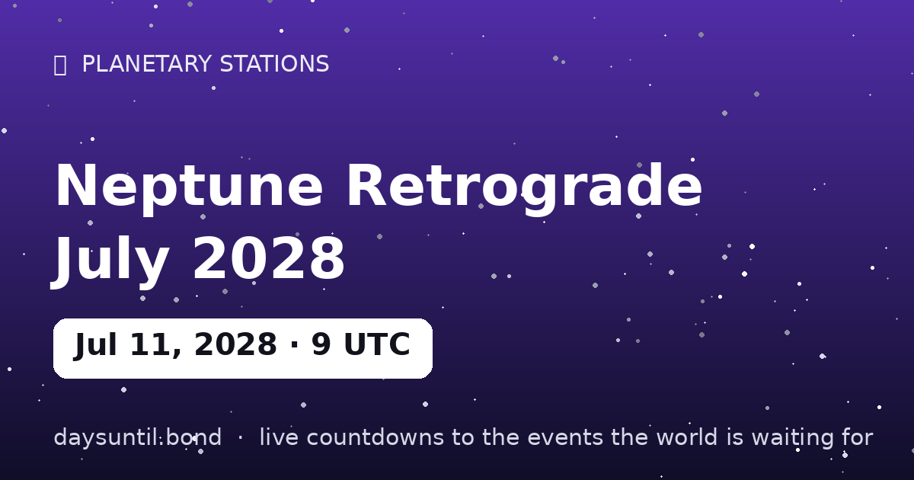

How Many Days Until Neptune Retrograde July 2028?
Neptune Retrograde July 2028 falls on Tuesday, July 11, 2028.
As of October 24, 2026: 626 days to go — 89 weeks and 3 days, 447 weekdays (179 weekend days), about 15,024 hours.

Quick facts
| Station moment (UTC) | July 11, 2028 · 09:32 |
|---|---|
| Zodiac position | 8°53' Aries |
| Direction | Turning Rx |
| Duration of phase | ~5 months |
About Neptune Retrograde July 2028
Neptune stations retrograde on July 11, 2028 at 09:32 UTC, at 8°53' Aries — computed to the minute with our own Keplerian ephemeris.
Neptune retrograde is the annual five-month dissolve of illusions — dreams and deceptions both get a second look. The station is the turning point itself: the day the planet's apparent motion reaches zero before reversing. In tradition, days around a station carry the event's themes most intensely — decisions made at a station are said to set the tone for the whole season that follows.
Your Neptune Retrograde July 2028 countdown milestones
It is easier to plan against fixed points than against a number that moves. These are the dates on which the countdown to Neptune Retrograde July 2028 passes each marker between now and the day itself — the last one falls on Monday 10 July, when there will be 1 day left.
| Milestone | Day | Date | Remaining |
|---|---|---|---|
| 365 days | Monday | 12 July 2027 | 365 days to go |
| 200 days | Friday | 24 December 2027 | 200 days to go |
| 100 days | Sunday | 02 April 2028 | 100 days to go |
| 50 days | Monday | 22 May 2028 | 50 days to go |
| 30 days | Sunday | 11 June 2028 | 30 days to go |
| 14 days | Tuesday | 27 June 2028 | 14 days to go |
| 7 days | Tuesday | 04 July 2028 | 7 days to go |
| 3 days | Saturday | 08 July 2028 | 3 days to go |
| 1 days | Monday | 10 July 2028 | 1 day to go |
How the remaining time breaks down
626 days is the headline, but it is rarely the number that helps. 447 of those are weekdays and 179 fall on a weekend, which is the split that matters if you are planning around work. It is 89 weeks and 3 days, or roughly 20.6 months, or about 15,024 hours.
| Unit | Until Neptune Retrograde July 2028 |
|---|---|
| Days | 626 |
| Weeks | 89 weeks and 3 days |
| Months (approx) | 20.6 |
| Weekdays | 447 |
| Weekend days | 179 |
| Hours | 15,024 |
| Sleeps | 626 |
Working days are Monday to Friday and do not subtract public holidays, which vary by country and employer — the full month-by-month split is on our weekday page for Neptune Retrograde July 2028.